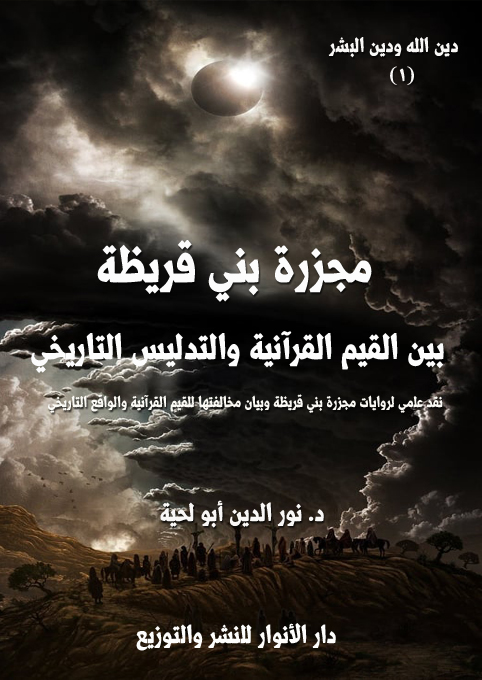
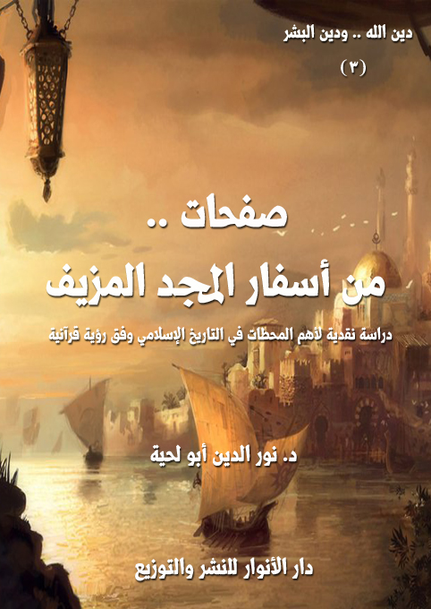
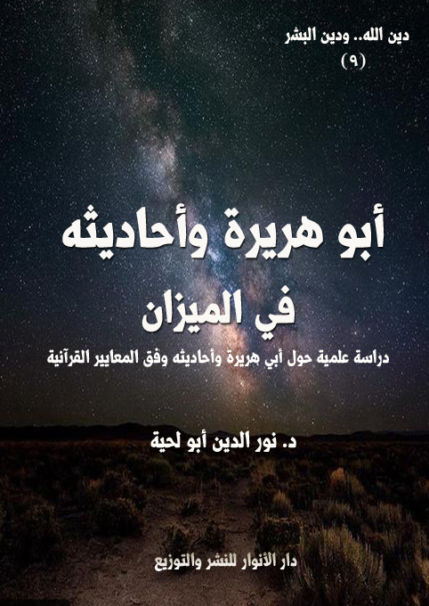
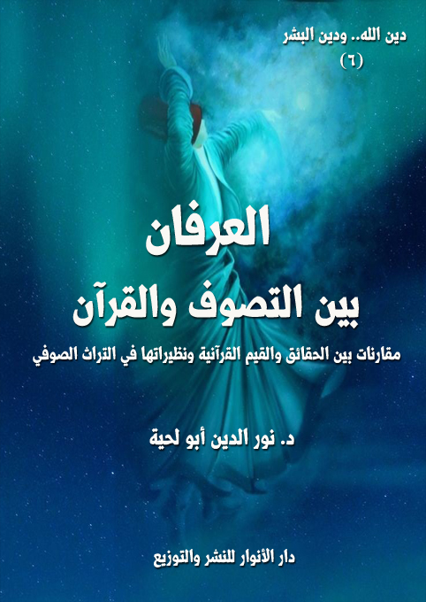

مجزرة بني قريظة بين القيم القرآنية والتدليس التاريخي
الكتاب: مجزرة بني قريظة بين القيم القرآنية والتدليس التاريخي
الناشر: مؤسسة العرفان للثقافة الإسلامية
الطبعة: الأولى، 1439 هـ
عدد الصفحات: 205
للمطالعة: هنا
لمطالعة الكتاب من تطبيق مؤلفاتي المجاني وهو أحسن وأيسر: هنا

التعريف بالكتاب
يحاول هذا الكتاب أن يقدم ردا علميا مفصلا على أخطر الجرائم التي نسبت للإسلام، ولرسول الله صلى الله عليه وآله وسلم، زورا وبهتانا، وهي تلك المجزرة التي يذكر المؤرخون وأصحاب السير حصولها في غزوة بني قريظة، وتم فيها ـ كما يذكرون ـ إبادة جميع الرجال، واستحياء النساء والأطفال، ثم بيعهم والمتاجرة بهم.
وقد اعتمد مجموعة أدلة يؤدي بعضها إلى بعض.. وهي مقسمة إلى الأصناف التالية:
أولا ـ المجزرة.. والتصنيف الديني: وفيه بيان سبب قبول أكثر العلماء لهذه المجزرة على الرغم من ضعف أدلتها واضطرابها، وهو تصنيفهم لها باعتبارها حدثا تاريخيا، والتساهل في نفس الوقت مع أمثال هذه الأحداث، ولو أنهم صنفوها ضمن العقائد أو الفقه، لما قبلها واحد منهم.
ثانيا ـ المجزرة.. والتدليس اليهودي: وفيه الأدلة القاطعة على دور اليد اليهودية في إشاعة الروايات المرتبطة بها ونشرها، واستغلال تساهل المحدثين في ذلك.
ثالثا ـ المجزرة.. والفئة الباغية: وفيه الأدلة القاطعة على الارتباط بين رواة المجزرة والفئة الباغية من بني أمية أو بني العباس، والذين راحوا يستثمرون هذه الحادثة في تبرير جرائمهم.
رابعا ـ المجزرة.. وحاكمية الشريعة: وفيه الأدلة القاطعة على كون أحداث المجزرة تتناقض تماما مع النصوص القطعية التي تبين حاكمية الشريعة الإسلامية، وحاكمية رسول الله صلى الله عليه وآله وسلم على الأمة، بخلاف ما يذكر رواة المجزرة من أن الحكم فيها كان لسعد، والحاكمية فيها كانت للتوراة.
المزارات الدينية بين الرؤية الإيمانية والرؤية التكفيرية
الكتاب: المزارات الدينية بين الرؤية الإيمانية والرؤية التكفيرية
الوصف: ردود علمية على الطروحات التكفيرية المرتبطة بالأضرحة والزيارات
السلسلة: دين الله ودين البشر
المؤلف: أ.د. نور الدين أبو لحية
الناشر: دار الأنوار للنشر والتوزيع
الطبعة: الأولى، 1439 هـ
عدد الصفحات: 271
للمطالعة: هنا
لمطالعة الكتاب من تطبيق مؤلفاتي المجاني وهو أحسن وأيسر: هنا

التعريف بالكتاب
يحاول هذا الكتاب من خلال الأدلة الكثيرة الرد على الطروحات التكفيرية المرتبطة بالأضرحة والمزارات والتوسل والاستغاثة، والتي شكلت ذريعة للإرهابيين لتكفير المسلمين وقتلهم، وقد ذكرنا في الكتاب ثلاثة أنواع من البراهين على مدى شرعية ما يذكره أصحاب الرؤية الإيمانية.
1. المزارات الدينية.. والمصادر المقدسة: وقد رجعنا فيها إلى إلى المصادر المقدسة، سواء تلك التي يتفق المسلمون جميعا على قبولها من أمثال كتاب الله وسنة رسوله صلى الله عليه وآله وسلم، أو تلك التي يختلفون فيها من أمثال أقوال الصحابة أو أئمة أهل البيت، والتي تدل جميعا على شرعية بناء المقامات والمشاهد والمزارات الدينية.
2. المزارات الدينية.. والمدارس الفقهية: وقد حاولنا البرهنة فيه على شرعية المزارات من خلال العودة إلى المصادر المعتمدة لدى المدارس الإسلامية الكبرى، وهي المدرسة المالكية، والشافعية والحنفية والحنبلية.
3. المزارات الدينية.. وأدوارها العلمية والتربوية: وقد ذكرنا فيه الأدوار المهمة التي تؤديها المزارات الدينية، وذلك بتوضيح الحقائق المجهولة، وكشفها، والدعوة للتحقيق فيها؛ فالآثار من أكبر السجلات الحافظة لحقائق التاريخ، بالإضافة إلى أدوارها في التربية الروحية والأخلاقية والاجتماعية وغيرها، والتي قد تصل إلى بث وعي سياسي في الأمة يخرجها من تبعيتها، ويحقق لها سيادتها الكاملة.
الكتاب: صفحات من أسفار المجد المزيف
الناشر: دار الأنوار للنشر والتوزيع
الطبعة: الأولى، 1439 هـ
عدد الصفحات: 393
للمطالعة: هنا
لمطالعة الكتاب من تطبيق مؤلفاتي المجاني وهو أحسن وأيسر: هنا

التعريف بالكتاب
يحاول هذا الكتاب ـ من خلال النماذج السبعة المختارة، ومن خلال العودة للمصادر التاريخية ـ أن يدرس الواقع الحقيقي لتلك الأمجاد التي يفتخر بها الكثير من الناس من غير وعي لحقيقتها المزيفة، والتي لم تزد المسلمين إلا تخلفا، ولم تزد القيم الإسلامية إلا تشويها.
وقد حاولنا أن تكون النماذج متفرقة، نتعلم من خلالها دراسة التاريخ وفق المنهج الإسلامي الأصيل، لا وفق ذلك المنهج التبريري الذي يحاول أن يضع ركاما من الرمال على أخطاء الملوك الذي سموا أنفسهم خلفاء.. وعلى أخطاء المستعمرين الذين سموا أنفسهم فاتحين.. وهذه النماذج السبعة هي:
لماذا يحب الصهاينة صلاح الدين الأيوبي.. ويتمنون عودته؟
هل كان هارون العباسي رشيدا.. أم سفيها؟
هل كان المتوكل ناصرا للسنة.. أم عدوا لها؟
هل كان دخول المسلمين إلى الأندلس فتحا؟
أيهما أكثر جرما: العثمانيون أم الصفويون؟
من أسقط بغداد: الخليفة أم وزيره؟
الملك العضوض.. والصياغة البشرية للدين
وقد اعتمدنا فيها جميعا المصادر التاريخية التي يعتمدها المتغنون بالأمجاد المزيفة، فلم نرجع لكتب المستشرقين، ولا الحداثيين، ولا غيرهم، بل اكتفينا بكل تلك المصادر التي يعتبرونها تجمع أحداث التاريخ الإسلامي بإنصاف واعتدال.
معاوية بن أبي سفيان في الميزان
الكتاب: معاوية بن أبي سفيان في الميزان
المؤلف: أ.د. نور الدين أبو لحية
الناشر: دار الأنوار للنشر والتوزيع
الطبعة: الثانية، 1437 هـ
عدد الصفحات: 100
للمطالعة: هنا
لمطالعة الكتاب من تطبيق مؤلفاتي المجاني وهو أحسن وأيسر: هنا

التعريف بالكتاب
يتصور البعض أننا عندما نتحدث عن معاوية نتحدث عن شخصية تاريخية، لا علاقة لها بالواقع، ولا بالدين.. وأن أمرها في الأخير يعود إلى الآخرة التي سنكتشف فيها جلية الأمر وحقيقته.
وهذا وهم كبير، فنحن لا يعنينا أن يكون معاوية مؤمنا ولا كافرا ولا منافقا، فما أكثر المؤمنين وما أكثر الكفار وما أكثر المنافقين.. ولا يعنينا أن يكون من أهل الجنة أو من أهل النار.. فالله هو رب الجنة والنار.. ولا يضرنا إن دخل في إحداهما أو لم يدخل.
لكن الذي يعنينا هو آثار معاوية في الدين الذي نعتقده ونعيشه.. لأن معاوية كان في ذلك الصدر الذي أسس فيه للعقائد والفقه والسلوك.. وفيه فسر القرآن..وفيه نقل الحديث.. وفيه أسست نظم الإسلام السياسية والاقتصادية والاجتماعية وغيرها.
الكتاب: أبو هريرة وأحاديثه في الميزان
المؤلف: أ.د. نور الدين أبو لحية
الناشر: دار الأنوار للنشر والتوزيع
الطبعة: الأولى، 1437 هـ
عدد الصفحات: 246
للمطالعة: هنا
لمطالعة الكتاب من تطبيق مؤلفاتي المجاني وهو أحسن وأيسر: هنا

التعريف بالكتاب
لا نريد من خلال هذا البحث رمي أحاديث أبي هريرة، ولا طرحها، ولا تكذيبها جميعا، وإنما ندعو إلى تمحيصها حتى نميز السم عن العسل، والصدق عن الكذب، والإلهي عن البشري، والمقدس عن المدنس.
ذلك أن الكثير من الروايات التي رواها أبو هريرة نجدها مروية من طرق غيره من الصحابة، بل نجدها عند الشيعة أو غيرهم من فرق المسلمين بأسانيدهم الخاصة بهم.
لكن غيرها، وخاصة مما اختص به، نحتاج فيه إلى تحقيق كبير، ذلك أن أبا هريرة لم يكن من الصحابة السابقين، ولا من الذين اكتفوا بالتلمذة على رسول الله صلى الله عليه وآله وسلم.. بل كان تلميذا نجيبا لغيره، وخاصة لكعب الأحبار، ولذلك اختلطت ـ باتفاق العلماء والمحدثين ـ أحاديثه التي رواها عن كعب بأحاديثه التي رواها عن رسول الله صلى الله عليه وآله وسلم، وكان له فوق ذلك اجتهاداته في بعض روايات الحديث، حيث كان يروي الحديث، ثم يضيف له بعض الإضافات التي يسميها العلماء إدراجا، ويعبر عنها هو بأنها من كيسه..
العرفان بين التصوف والقرآن
الوصف: مقارنات بين الحقائق والقيم القرآنية ونظيراتها في التراث الصوفي
السلسلة: دين الله ودين البشر
المؤلف: د. نور الدين أبو لحية
الناشر: دار الأنوار للنشر والتوزيع
الطبعة: الأولى، 1442 هـ
عدد الصفحات: 503
للمطالعة: هنا
لمطالعة الكتاب من تطبيق مؤلفاتي المجاني وهو أحسن وأيسر: هنا

ليس هذا الكتاب خاصا بنقد [العرفان]؛ فهو ـ بشقيه النظري والعملي ـ ركن من أركان الدين الأساسية، التي لا يتم التدين الصحيح إلا بتحققها، ذلك أنه يعني العلم الذي يبحث فيما يطلق عليه [التربية الروحية]، أو [علم السلوك]، أو [علم الإحسان]، أو كيفية التواصل مع الله، وتهيئة النفس لتصبح أهلا لذلك.. ومثل هذا العلم يستحيل على العاقل المؤمن أن يرده أو يرفضه أو ينكره، بل إن عليه أن يدعو إليه وينصح به ويلتزم بمقتضياته.
وليس هو أيضا خاصا بنقد [الطرق الصوفية ] نقدا كليا شاملا استئصاليا، مثلما يفعل الغلاة من السلفية؛ فللصوفية بطرقها ومدارسها المختلفة دور كبير في نشر الكثير من القيم الجميلة، وقبلها نشر الإسلام في الكثير من مناطق العالم التي لولاهم لبقيت في ضلالها وشركها ووثنيتها.
وليس هو أيضا خاصا بنقد [أعلام التصوف] المتقدمين كمعروف الكرخي والجنيد والشبلي وغيرهم.. أو ممن جاء بعدهم كالقشيري والطوسي.. أو من جاء بعدهم كالغزالي ومدرسته.. فكل هؤلاء الأعلام من المحترمين جدا وفي جميع المدارس الإسلامية، ولهذا نرى تراثهم، والذي جُمع في [إحياء علوم الدين] متوفرا لدى جميع المدارس الإسلامية.
ولكنه خاص بالذين خرجوا عن ذلك المنهج، ووقعوا في الكثير من الشطحات والأوهام التي صرفت عن جوهر هذا العلم وروحه ومقاصده إلى معان شوهته، وانحرفت به عن مساره الذي هو تزكية النفس إلى معان أخرى لا نرى شرعيتها، بل نرى وجوب التحذير منها والتصدي لها.